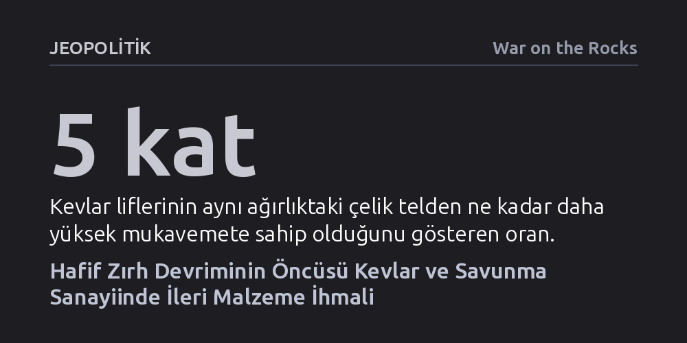

JEOPOLITIK · War on the Rocks · 2026-09-07
Kevlar, koruma mantığını ağır çelikten esnek ve hafif liflere kaydırarak modern askeri teçhizatı kökten dönüştürdü. Ancak hipersonik sistemlerin ve yeni nesil zırhların temeli olan ileri malzemeler, günümüz savunma bütçelerinde ve sanayi politikalarında kritik biçimde ihmal ediliyor.
Geleceğin savunma üstünlüğünü yalnızca yazılım ve yapay zekânın belirleyeceği yanılgısına karşı, en akıllı sistemlerin dahi sahada ancak ileri malzeme mühendisliği sayesinde ayakta kalabildiğini gösteriyor.

Askeri savunma teknolojileri denildiğinde uzun yıllar boyunca akla ilk gelen çözüm zırhı kalınlaştırmak, çelik plakaları büyütmek ve araçları ağırlaştırmaktı. Ancak zırhın artması askerin hareket kabiliyetini doğrudan kısıtlıyor, muharebe sahasında aşırı yorgunluğa ve operasyonel hantallığa yol açıyordu. Kevlar, koruma ile çeviklik arasındaki bu kadim ikilemi ortadan kaldırarak Amerikan ordusunun ve genel savunma doktrininin teçhizata bakışını kökten değiştirdi.
İkinci Dünya Savaşı'ndan kalan ağır M1 çelik kasklar ve hantal naylon yelekler, özellikle Vietnam Savaşı'nda görülen düşük hızlı topçu şarapnelleri ve el yapımı patlayıcı parçalarına karşı askerleri korumakta yetersiz kalmıştı. Sahadaki can kayıpları, korumanın daha fazla metal yığmaktan değil; moleküler seviyede tasarlanmış esnek, hafif ve yüksek performanslı malzemelerden geçmesi gerektiğini kanıtladı. Kevlar, askerin sırtındaki yükü hafifletirken hayatta kalma şansını katbekat artıran yeni bir çağ açtı.
Kevlar'ın doğuşu planlı bir askeri projenin değil, sivil endüstri arayışının ve laboratuvardaki dikkatli bir gözlemin ürünüydü. DuPont bünyesinde çalışan kimyager Stephanie Kwolek, 1965 yılında deney tüpünde beliren bulanık ve akışkan polimer çözeltisini soğuk çekim yöntemiyle ipliğe dönüştürdü. Başta hatalı bir karışım zannedilen bu para-aramid lif, aynı ağırlıktaki çelikten beş kat daha sağlamdı. Kwolek yıllar sonra bu buluşunu, "Bir insanın hayatını kurtarmak kadar insana tatmin ve mutluluk veren başka bir şey olduğunu sanmıyorum," sözleriyle özetleyecekti.
Geliştirilen lif ilk olarak cephede değil, otomotiv sektöründe çelik takviyeli radyal lastiklerin aşırı ısınma, ağırlık ve korozyon sorunlarını aşmak için kullanıldı. Ardından endüstriyel kablolara, NASA uzay araçlarına ve polis yeleklerine girdi. Çift kullanımlı potansiyeli gören ordu araştırma merkezleri, 1980'lerin başında Kara Birlikleri Personel Zırh Sistemi'ni (PASGT) üretti. Kevlar miğfer ve yelekler, keşfinden tam 18 yıl sonra, ilk kez 1983 yılındaki Grenada harekâtında askerlerin üzerinde muharebe alanına girdi.
Kevlar'ın sahadaki başarısı tek bir ürünün zaferiyle sınırlı kalmadı; arkasından devasa bir ileri malzeme ekosistemi sürükledi. Yangına dayanıklı Nomex liflerinden, günümüzün ultra yüksek moleküler ağırlıklı polietilen zırh plakalarına (Dyneema ve Spectra) uzanan birçok teknoloji Kevlar'ın açtığı yoldan ilerledi. 1990'lardaki Körfez Savaşı ve 2000'lerdeki Afganistan harekâtlarında kullanılan zırh sistemleri, mermi çekirdeklerini durduran seramik plakalar ile şarapneli emen yumuşak Kevlar katmanlarının birleşimine dönüştü.
Bu devrim askeri araç ve platform mimarisine de sıçradı. Zırhlı araçların iç gövdesine uygulanan parçalanma önleyici astar katmanları (spall liner), helikopter kokpit korumaları ve patlama sönümleyici kompozitler bu liflerle tasarlandı. Askeri alandaki bu sıçrama sivil yaşamda da karşılık buldu; denizaltı fiberoptik iletişim hatlarından itfaiyeci tulumlarına, uçak gövde parçalarından darbelere dayanıklı akıllı telefon kasalarına kadar modern altyapının görünmez omurgası haline geldi.
Günümüzde savunma dünyasının tüm dikkati yapay zekâya, insansız otonom araçlara ve siber operasyonlara kaymış durumda. Ancak bütün bu yazılımları ve gelişmiş sistemleri sahada taşıyacak, aşırı sürtünmeye, ısıya ve darbelere karşı koruyacak olan temel unsur ileri malzeme mühendisliğidir. Buna rağmen Pentagon'un 2025 mali yılı için ileri malzemelere ayırdığı 414 milyon dolarlık bütçe talebi, tek başına güvenilir yapay zekâ bütçesinin yüzde onuna bile ulaşmıyor. Oysa hipersonik silahlar, yönlendirilmiş enerji sistemleri ve hayalet kaplamalar doğrudan bu malzeme araştırmalarına bağımlı.
Stratejik tablodaki bir diğer kritik dönüşüm ise üretim mülkiyetinde yaşanıyor. Amerikan askerinin başını ve gövdesini yarım yüzyıldır koruyan Kevlar ve Nomex markalarını içeren Aramid birimi, DuPont tarafından yaklaşık 1,8 milyar dolara özel sermaye fonu kontrolündeki Arclin firmasına satıldı. Üretimin köklü bir sanayi kuruluşundan finans odaklı fonlara devredilmesi ve tesislerin ABD, Avrupa ile Asya'ya yayılmış olması tedarik zincirinde yeni soru işaretleri doğuruyor. İleri malzeme bilimi hak ettiği yatırımı ve kurumsal güvenceyi almadığı takdirde, en gelişmiş yapay zekâ algoritmaları dahi sahada askerleri ve platformları koruyacak sağlam bir fiziksel kalkandan yoksun kalabilir.